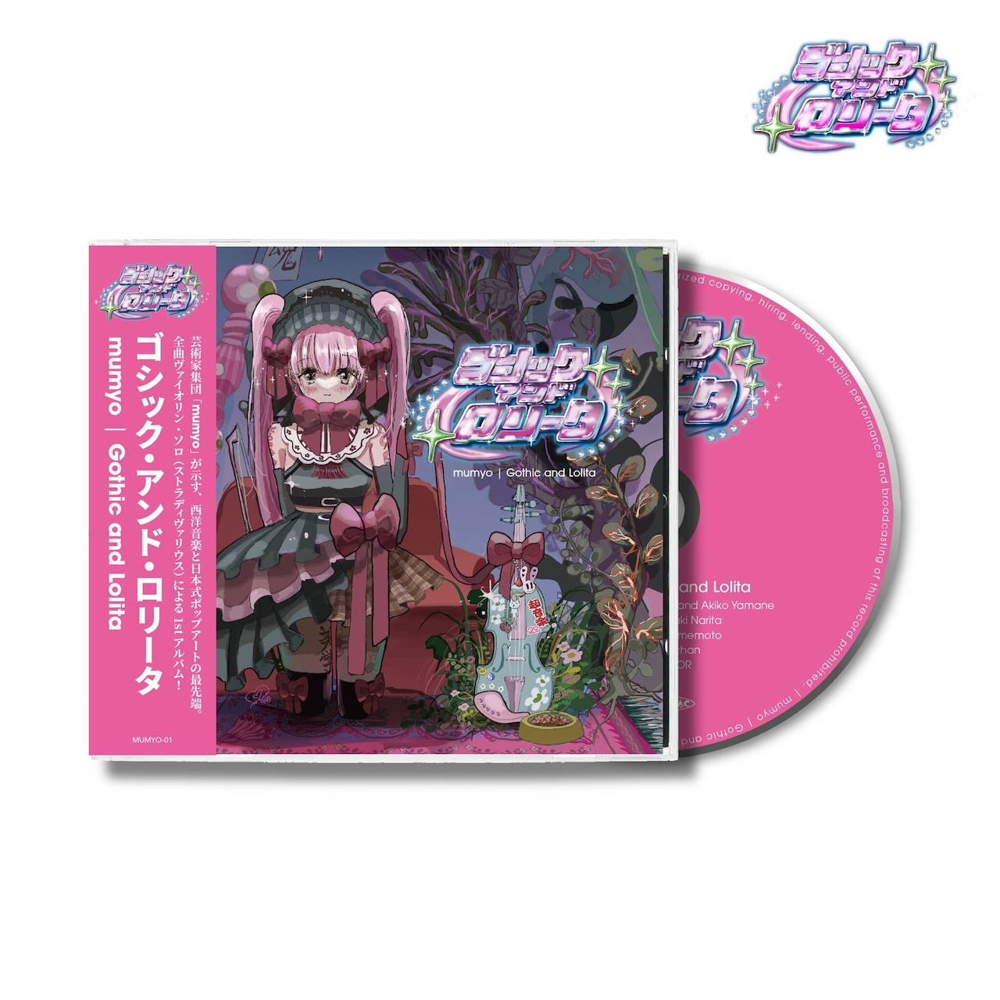

ゴシック・アンド・ロリータ
project as collective mumyo
composition: Yuri Umemoto, Akiko Yamane violin: Tatsuki Narita
*Gothic and Lolita = japanese street fashion aesthetics
クラシック（西洋芸術）音楽と、日本発祥のファッション・サブカルチャーであり西洋を参照したゴシックロリータを、梅本佑利、山根明季子の楽曲群と、成田達輝のヴァイオリン独奏によって、接続、思索していった。
Bourrée with black ribbons
concert 2023.4.2[link]